Gracias Elder y Hermana Bishop por su amor, su fe, su servicio y su ejemplo. Esta página es un pequeño recuerdo de todo lo que dejaron en nuestros corazones, con la esperanza y la fe de que pronto nos volveremos a encontrar.
📸 Galería de Fotos
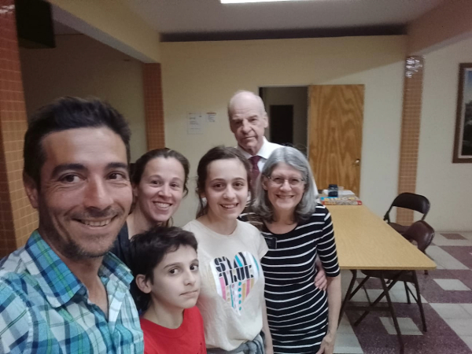
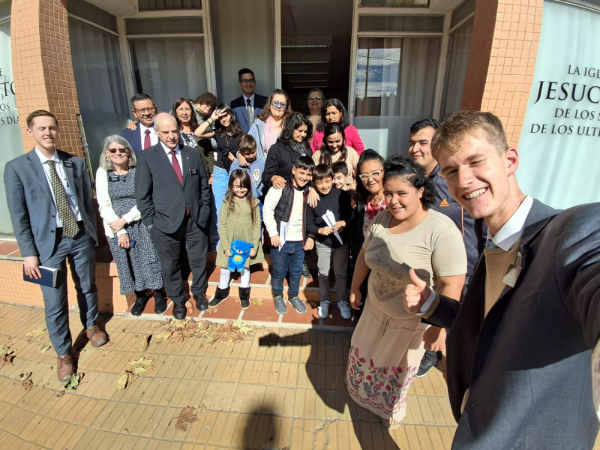
/>
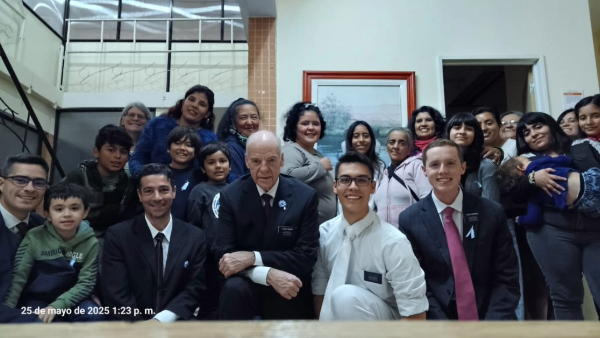
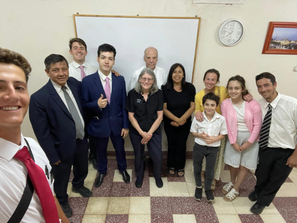
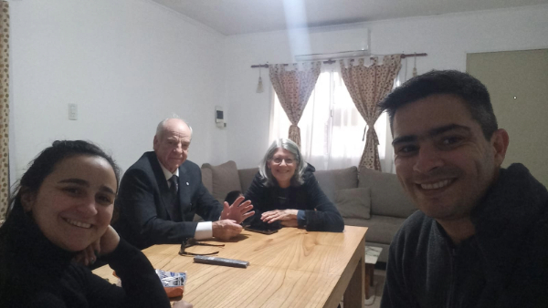
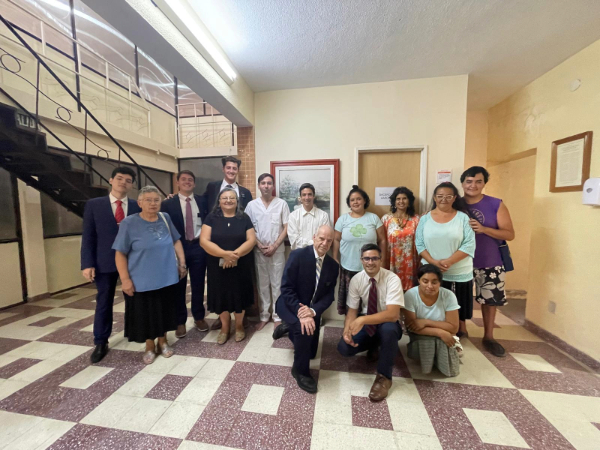
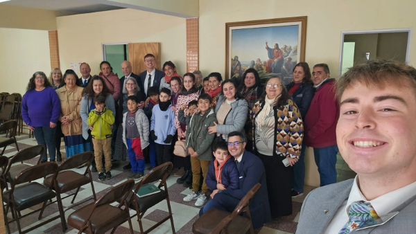
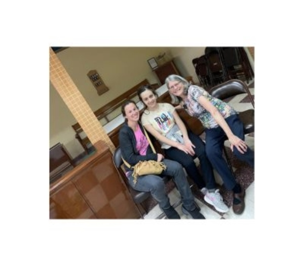
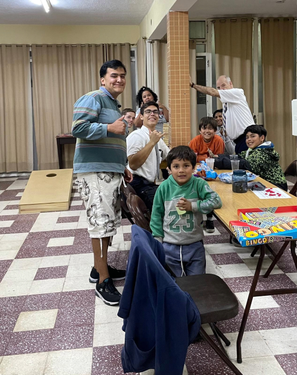
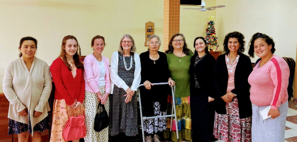
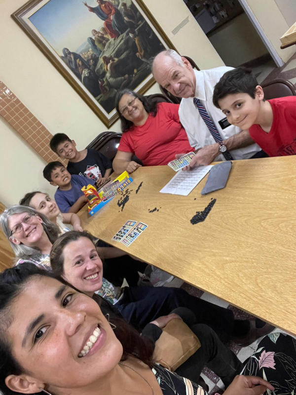
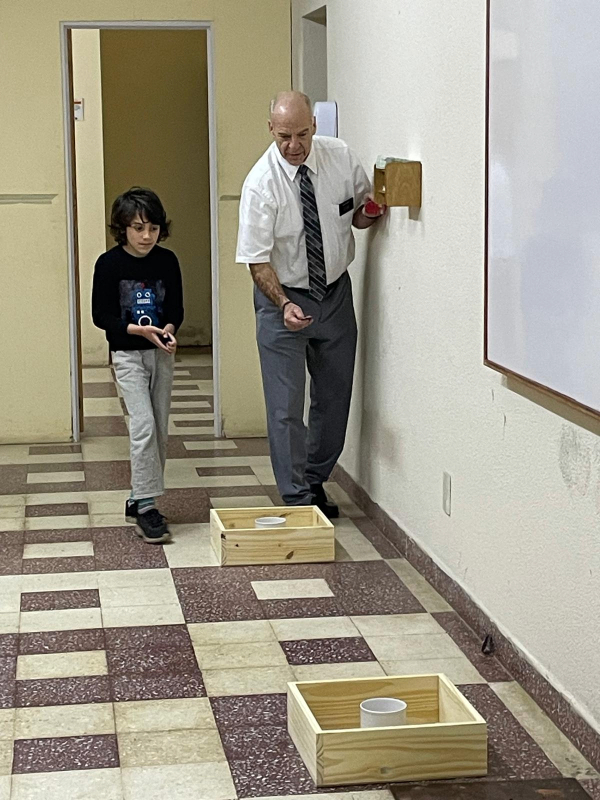
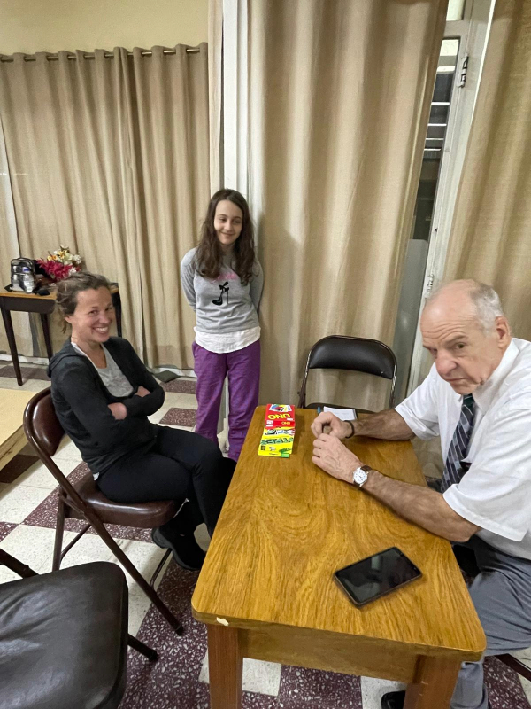
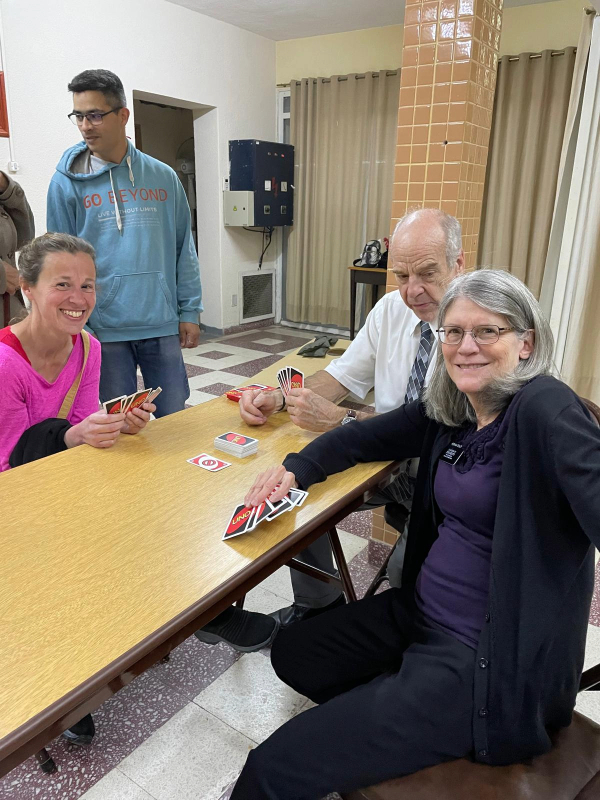
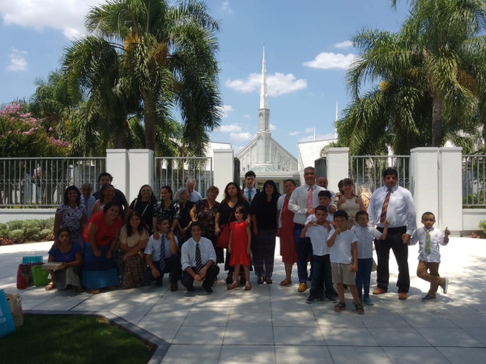
💌 Mensajes de Agradecimiento
💖 La Esperanza del Reencuentro
Con la fe inquebrantable en que los lazos forjados en el servicio del Señor son eternos, anhelamos el día en que nuestros caminos se crucen de nuevo. Así como Él nos prometió: "Mas la senda de los justos es como la luz de la aurora, Que va en aumento hasta que el día es perfecto." – Proverbios 4:18. Que esta luz nos guíe hasta nuestro próximo "hola".